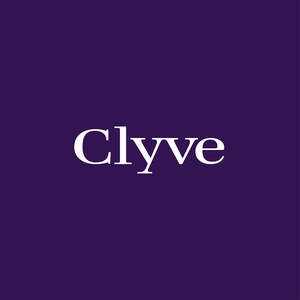

Trade Mark Journal No.2025/051 19 December 2025
UK00004302885 29 November 2025 (9,35,42,45)

- Class 9
- Document management software; Operational risk management software; Enterprise content management [ECM] software; Document management system software; File management software; Business process management [BPM] software; Data management software; Document automation software; Workflow management system software; Computer software for document management; Database management software; Downloadable computer software for the management of data; Downloadable computer software for the management of information; Data and file management and database software; Collaboration management software platforms; Software for the analysis of business data; Computer software programs for database management; Computer programmes for document management; Workflow software; Business intelligence software; AI software; Artificial intelligence software; Artificial intelligence software for analysis; Downloadable computer software; Downloadable computer software applications; Downloadable computer programs; Software for computers; Downloadable application software; Downloadable software; Smartphone software applications, downloadable; Downloadable mobile applications; Downloadable applications; Downloadable applications for use with mobile devices; Downloadable applications for mobile devices; Downloadable computer software for use as an application programming interface (API); Downloadable mobile applications for the management of data.
- Class 35
- Analysis of business management systems; Business risk management services; Consultancy relating to business document management; Risk management consultancy [business]; Business file management; Advisory services relating to business risk management; Provision of computerised business management information; Assessment analysis relating to business management; Business risk assessment services; Computerized file management; File management (Computerized -).
- Class 42
- Software as a service [SaaS] featuring software for machine learning; Artificial intelligence consultancy; Artificial intelligence as a service (AIAAS); Platforms for artificial intelligence as software as a service [SaaS]; Software as a service [SaaS] featuring computer software platforms for artificial intelligence; Software as a service [SaaS] featuring software for deep learning; Platform as a Service [PaaS]; Platform as a service [PaaS]; Application service provider (ASP); Application service provider [ASP] services.
- Class 45
- Regulatory compliance auditing; Legal compliance auditing; Reviewing standards and practices to assure compliance with laws and regulations; Advisory services relating to regulatory affairs.
Fahad Younas